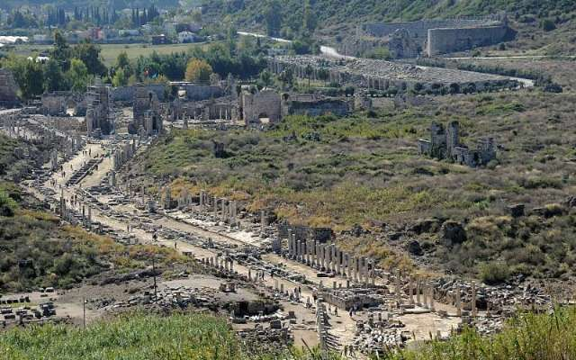

Kültür Varlıkları指南收录了安塔利亚的75个地点：48 考古遗址, 11 博物馆, 6 城堡与历史建筑, 3 瀑布, 3 峡谷, 2 自然景观, 1 宗教建筑, 1 徒步路线。下面是重点推荐、地图和完整列表。
⭐ 重点推荐

1 · 安塔利亚 · 考古遗址克桑索斯遗址
克桑索斯是吕基亚最重要的城市，长期作为其行政中心。它坐落在埃申河谷上方的山坡上，以热爱自由的居民而闻名：古代文献记载，克桑索斯人曾两次宁可焚城也不投降。游客可以看到吕基亚独有的柱墓，包括“哈耳庇厄纪念碑”和刻有已知最长吕基亚文字的铭文柱。一些纪念建筑，如“涅瑞伊得斯纪念碑”，在 19 世纪被运往国外。1988…

2 · 安塔利亚 · 博物馆安塔利亚博物馆
安塔利亚博物馆是土耳其藏品最全面的考古博物馆之一，汇集了潘菲利亚、吕基亚和皮西迪亚的珍宝。参观从卡拉因洞穴的史前文物开始，接着穿过陈列佩尔吉出土众神与皇帝雕像的展厅，大理石在那里仿佛有了生命。亮点之一是《疲惫的赫拉克勒斯》，它的上下两半曾长期分处不同国家，后来才得以合璧。雕刻精美的罗马石棺、马赛克、钱币和追索回国的文物使馆藏更加完整。

3 · 安塔利亚 · 考古遗址阿斯潘多斯
阿斯潘多斯位于柯普吕河（古称欧律墨冬河）畔，拥有古代世界保存最完好的剧场之一。剧场建于公元 2 世纪马可·奥勒留在位时期，由建筑师芝诺设计，舞台建筑几乎完整保存，约 15000…
🗺 地图
📍 全部地点 (75)
考古遗址 (48)
克桑索斯遗址考古遗址 · UNESCO阿斯潘多斯考古遗址 帕塔拉遗址考古遗址
帕塔拉遗址考古遗址
佩尔吉遗址考古遗址 锡德遗址考古遗址
锡德遗址考古遗址 锡德拉古城考古遗址
锡德拉古城考古遗址 克拉古斯的安条克古城考古遗址
克拉古斯的安条克古城考古遗址 安提费洛斯古城考古遗址
安提费洛斯古城考古遗址 阿佩尔莱古城考古遗址
阿佩尔莱古城考古遗址 利基亚的阿波罗尼亚古城考古遗址
利基亚的阿波罗尼亚古城考古遗址 阿里亚索斯古城考古遗址
阿里亚索斯古城考古遗址 阿里坎达遗址考古遗址
阿里坎达遗址考古遗址 伊德贝索斯古城考古遗址
伊德贝索斯古城考古遗址 约塔佩古城考古遗址
约塔佩古城考古遗址 凯科瓦沉没之城考古遗址
凯科瓦沉没之城考古遗址 基塔瑙拉古城考古遗址
基塔瑙拉古城考古遗址 基亚内埃古城考古遗址
基亚内埃古城考古遗址 吕基亚文明博物馆与安德里亚卡遗址考古遗址
吕基亚文明博物馆与安德里亚卡遗址考古遗址 利米拉遗址考古遗址
利米拉遗址考古遗址 米拉遗址考古遗址
米拉遗址考古遗址 奥林波斯遗址考古遗址
奥林波斯遗址考古遗址 法塞利斯遗址考古遗址
法塞利斯遗址考古遗址 菲洛斯古城考古遗址
菲洛斯古城考古遗址 罗迪亚波利斯古城考古遗址
罗迪亚波利斯古城考古遗址 塞贝达古港考古遗址
塞贝达古港考古遗址 潘菲利亚的塞琉西亚考古遗址
潘菲利亚的塞琉西亚考古遗址 塞尔盖古城考古遗址
塞尔盖古城考古遗址 塞利努斯古城考古遗址
塞利努斯古城考古遗址 西利翁古城考古遗址
西利翁古城考古遗址 西美纳遗址考古遗址
西美纳遗址考古遗址 苏拉古城考古遗址
苏拉古城考古遗址 泰缪萨古城考古遗址
泰缪萨古城考古遗址 特尔梅索斯遗址考古遗址
特尔梅索斯遗址考古遗址 特雷本纳古城考古遗址
特雷本纳古城考古遗址 特里萨古城考古遗址
特里萨古城考古遗址 提贝里索斯古城考古遗址
提贝里索斯古城考古遗址 厄居兹伊尼洞穴考古遗址阿卡利索斯古城考古遗址阿尔内艾古城考古遗址贝尔迪比洞穴考古遗址埃滕纳古城考古遗址加加伊古城考古遗址伊辛达古城考古遗址坎迪巴古城考古遗址科里达拉古城考古遗址拉莫斯古城考古遗址佩德内利索斯古城考古遗址伊德罗斯古城考古遗址
厄居兹伊尼洞穴考古遗址阿卡利索斯古城考古遗址阿尔内艾古城考古遗址贝尔迪比洞穴考古遗址埃滕纳古城考古遗址加加伊古城考古遗址伊辛达古城考古遗址坎迪巴古城考古遗址科里达拉古城考古遗址拉莫斯古城考古遗址佩德内利索斯古城考古遗址伊德罗斯古城考古遗址博物馆 (11)
安塔利亚博物馆博物馆 阿兰亚博物馆博物馆
阿兰亚博物馆博物馆 安塔利亚阿塔图尔克故居博物馆博物馆
安塔利亚阿塔图尔克故居博物馆博物馆 安塔利亚民族志博物馆博物馆
安塔利亚民族志博物馆博物馆 安塔利亚玩具博物馆博物馆
安塔利亚玩具博物馆博物馆 圣尼古拉斯纪念博物馆博物馆
圣尼古拉斯纪念博物馆博物馆 锡德博物馆博物馆阿兰亚阿塔图尔克故居博物馆博物馆安塔利亚墓葬博物馆博物馆埃尔马勒博物馆博物馆梅夫拉维修道院博物馆博物馆
锡德博物馆博物馆阿兰亚阿塔图尔克故居博物馆博物馆安塔利亚墓葬博物馆博物馆埃尔马勒博物馆博物馆梅夫拉维修道院博物馆博物馆